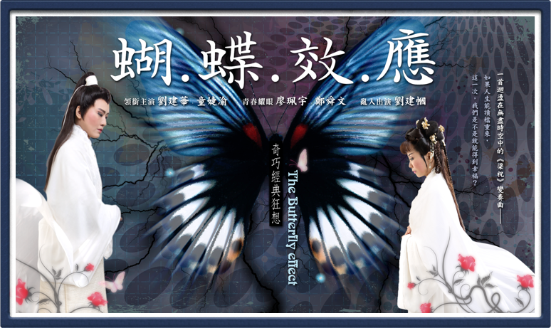
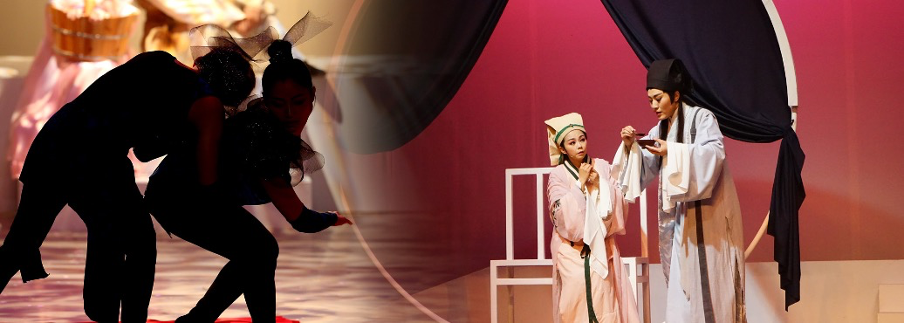

WORK · 2017 / 2018
《蝴・蝶・效・應》
編劇・導演・主演

歌仔戲 × 黃梅調 × 現代劇場：把《梁祝》倒著演
以家喻戶曉的《梁山伯與祝英台》為素材，加入「蝴蝶效應」概念，讓故事從結局往起點倒行。觀眾一面看見熟悉的梁祝片段，一面跟著旁觀者四九重新理解愛情與選擇。
2017 首演後赴北京當代小劇場戲曲藝術節開幕演出，2018 以「蛻變版」於臺灣戲曲藝術節演出。作品曾獲台新藝術獎提名。
SYNOPSIS
一首倒著行進的《梁祝》變奏曲
作品選取〈泣墓化蝶〉、〈樓臺會〉、〈十八相送〉、〈學堂三載〉、〈草橋結拜〉等熟悉段落，卻反向排列，讓因果關係被重新觀看。四九不再只是陪襯角色，而成為穿越故事的視角；每一次回到更早的時間，都像在追問：如果早一點知道結局，是否能改變命運？
「？」號人物持續亂入、評論與推動敘事，讓經典文本、觀眾記憶與當代觀點同時存在。
當經典結局不再是唯一答案，最微小的改變，也可能讓故事長出另一條路。
PERFORMANCE HISTORY
演出歷程
※ 台北2017大稻埕戲苑【第四屆青年戲曲藝術節】
首製發表，創票房紀錄 ※
※ 北京2017繁星戲劇村【第四屆當代小劇場戲曲藝術節】
獲選開幕大戲、歌仔戲驚艷北京 ※
※ 2018國立傳統藝術中心【臺灣戲曲藝術節】
載譽回台、蛻變展翅 ※

CREATION
經典狂想
音樂以歌仔戲曲牌與黃梅調為主軸，再加入吉他、數板、流行節奏與舞蹈。作品保留戲曲寫意，同時打破線性敘事，讓「經典」不只是被重演，而是被拆開、倒轉、重新理解。
CRITICAL RESPONSE
評論節錄
自由出入於當代與傳統、大眾通俗與嚴肅藝術，具辯證的火花，且揮灑自如賞心悅目。令人感受到台灣新興民間戲劇的無窮希望。這是一齣獨一無二的，屬於二十一世紀初台灣的「山伯英台」。
台新藝術獎提名觀察員 林靖傑 評《蝴.蝶.效.應》